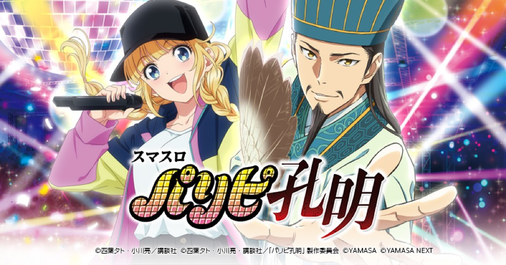

スマスロ パリピ孔明
3種類のCZからLIVE BONUSへ。15G＋αのParty Timeで兵法書を生かしてボーナスを重ねる。
- 導入
- 2026年10月
- メーカー
- 山佐ネクスト
- 分類
- パチスロ
主要スペック
三歌の礼・英子の試練・石兵八陣から初当りボーナスを目指し、消化後は必ず15G＋αのST『Party Time』へ。9種類の兵法書、4Gのパリピミッション、閃KING孔明、渋谷決戦、超Party Timeまでを専用画面で体験できます。
- CZは三歌の礼約33%・英子の試練約50%・石兵八陣約85%
- Party Timeは15G＋α・継続約73%・兵法書は全9種類
- 渋谷決戦は4G・勝利期待度約84%、超Party Timeは継続約81%
スマスロ パリピ孔明の見どころと計算条件
三歌の礼・英子の試練・石兵八陣から初当りボーナスを目指し、消化後は必ず15G＋αのST『Party Time』へ。9種類の兵法書、4Gのパリピミッション、閃KING孔明、渋谷決戦、超Party Timeまでを専用画面で体験できます。
スマスロ パリピ孔明を数字で早分かり
パリピチャンス（CZ）からParty Time、超Party Timeまでの流れと、設定ごとの結果差を固定レートで比較できます。
30秒で分かるスマスロ パリピ孔明
3種類のCZから初当りボーナスをつかみ、15G＋αのSTで9種類の兵法書を生かしながらボーナス連を目指す直ST型です。
こんな遊び方に向いている
- CZごとのゲーム性とPUSH当落を比較したい
- 兵法書を集めてParty Timeを伸ばしたい
- 渋谷決戦から上位STまで一続きで体験したい
遊ぶ前に確認したいこと
- CZ・ST・渋谷決戦の主要ゲーム数は公開値
- 9種類の兵法書と赤7・白7を個別表示
- 未公表の当選率は体験用代表値
3種類のパリピチャンス
通常時は約32G周期のステージチェンジやレア役からCZ・ボーナスを目指します。ボーナス当選の約66%がCZ経由です。
三歌の礼は1セット7G・最大3セットで期待度約33%、英子の試練は16G・期待度約50%、石兵八陣は15Gで小役4回成立を目指し期待度約85%。専用画面ではCZごとのゲーム数を進め、最後のPUSHで当落を開きます。
LIVE BONUSと9種類の兵法書
LIVE BONUSは赤7が平均約200枚、白7が平均約400枚で、純増約4.2枚/G。ボーナス中は兵法書ポイント、HEYHO ZONE、上乗せバンバンを抽選します。
兵法書はチェリー・スイカ・チャンス目対応、ベルナビ、ミッション発展、臥龍転生、STホールド、赤7強化、Vストックの全9種類。平均3.4個の獲得を代表分布で抽選し、ST画面へ表示します。
15G＋αのParty Time
ボーナス後は必ずParty Timeへ。1セット15G＋α・継続約73%で、ベル・レア役・パリピミッション・DIVAフリーズ・閃KING孔明から次のボーナスを狙います。
パリピミッションは4G・成功期待度約36%。臥龍転生は小役を1回引けば成功となる約75%の特殊ミッション、閃KING孔明は2択成功でボーナスとなる期待度50%の演出です。
渋谷決戦から上位STへ
通常STの5連目は12.5%、7連目は25%、10連目はボーナス当選時に渋谷決戦ボーナスが選ばれるチャンス。ボーナスは平均約150枚で、終了後に4G・勝利期待度約84%の渋谷決戦へ進みます。
勝利時は30Gのエピローグを経て、15G＋α・継続約81%の超Party Timeへ。エンディング後の天下泰平への道は15Gで究極孔明を抽選し、非当選でも超Party Timeへ進みます。
固定条件と簡略化する範囲
- 約31G/50枚・1,000円46枚貸し・5.2枚交換で固定
- 設定1〜6を均等抽選し、CZ3種類・CZ合算・BONUS初当りの公開設定別値を使用
- CZゲーム数、ST15G、ミッション4G、渋谷決戦4G、エピローグ30Gを反映
- 未公表のCZ選択・兵法書獲得・特化ゾーン発生率は体験用代表値
- 19,000枚到達時はコンプリート表示
平均Gと投資目安の計算
掲載するParty Time初当り約1/309.9は設定1基準です。当サイトでは50枚あたり31G、1,000円46枚貸しの固定条件から、設定1基準の平均投資目安を約10,900円と計算します。
シミュレーターでは設定1〜6を均等抽選します。設定1〜6で公開されている初当り値を個別に使います。公開されていない特化ゾーン・上位到達率の設定差は加えません。 換金は5.2枚交換で固定し、結果とランキングに設定を表示します。
シミュレーション結果の見方
当るまでパリピチャンス（CZ）・Party Timeまでのゲーム数
設定設定1・2・3・4・5・6から抽選された今回の設定
上位到達渋谷決戦と超Party Timeへの到達
最終収支差枚と5.2枚交換の収支目安
結果は自動で「マイ記録」に保存され、同じ機種を何回試したか、最高収支、勝率をあとから確認できます。
簡易シミュレーターについて
パリピチャンス（CZ）・Party Time・超Party Timeの流れを固定条件で体験できます。JavaScriptを有効にすると、この位置にシミュレーター、演出、マイ記録、機種別ランキングが表示されます。
結果は娯楽・確率理解のための参考表示です。金銭的価値や交換価値はなく、実際の勝敗や収支を保証しません。18歳未満の方の利用はお控えください。
スマスロ パリピ孔明のよくある質問
スマスロ パリピ孔明はどんな台？
三歌の礼・英子の試練・石兵八陣から初当りボーナスを目指し、消化後は必ず15G＋αのST『Party Time』へ。 CZは三歌の礼約33%・英子の試練約50%・石兵八陣約85%が主な確認ポイントです。
スマスロ パリピ孔明の平均投資目安は？
設定1基準のParty Time初当り約1/309.9と、50枚あたり31G・46枚貸しの固定条件から、平均10,900円を目安として表示します。実際の設定や遊技状況で結果は変わります。
設定とゲームの流れはどう抽選する？
開始時に設定1・2・3・4・5・6から1つを均等抽選し、パリピチャンス（CZ）、Party Time、渋谷決戦、超Party Timeの順で到達を判定します。設定は最終結果とランキングに表示します。
収支はどう計算する？
1,000円46枚貸し・5.2枚交換の固定条件で投資、換金、収支目安を計算します。実店舗の再プレイ、持ちメダル、端数処理は含みません。